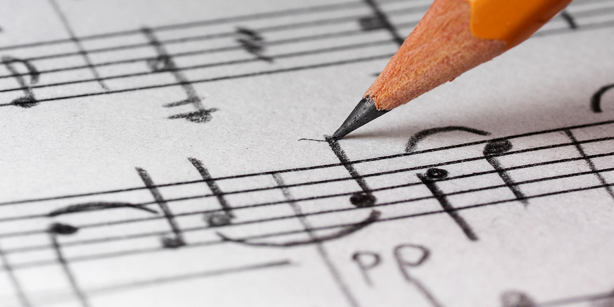

Cómo empezar a componer música para videojuegos y por qué es tan importante para la industria
De código a compases. Cómo componer tus primeras pistas para un videojuego (o cualquier otro rubro).
Cuando pensamos en hacer un videojuego, lo primero que se nos viene a la cabeza suele ser la jugabilidad, los gráficos o la historia. Pero hay un elemento que muchas veces define la identidad del juego, aunque pase más desapercibido: la música.
Empecé a interesarme por la música para videojuegos cuando me di cuenta de lo difícil que es encontrar músicos dentro de equipos indie. En ese momento pensé: ¿y si lo hago yo? Ya sabía programar, tenía sensibilidad musical... solo necesitaba conectar esos dos mundos.
¿Por qué la música es tan importante en los videojuegos?
La música en los videojuegos no es solo un acompañamiento. Cumple muchos roles:
- Marca el tono emocional de una escena.
- Refuerza la identidad del juego.
- Genera inmersión y guía al jugador.
- Crea momentos memorables (¿quién no recuerda la música de Pokémon, Zelda o Undertale?).
Incluso en juegos minimalistas, una buena pista puede mejorar la experiencia. Y si el juego tiene pocos recursos visuales, la música puede ser el puente emocional más fuerte que tenés.
¿Necesito saber teoría musical?
No necesariamente. Obviamente, ayuda saber escalas, acordes, estructura musical… pero no es un requisito para empezar. Yo mismo arranqué con conocimientos básicos de piano y composición, y con el tiempo fui mejorando.
Lo más importante es entrenar el oído, estudiar ejemplos y animarse a probar cosas simples. Al igual que con la programación, se aprende mucho haciendo.
¿Qué herramientas puedo usar?
Para componer música para videojuegos, hay muchas herramientas accesibles:
- DAWs (Digital Audio Workstations): como FL Studio, Reaper, LMMS, Ableton y Audacity que es gratis!. Incluso GarageBand si estás en Mac.
- Plugins y librerías: como Kontakt o Spitfire LABS, que ofrecen instrumentos realistas o sintéticos.
- Herramientas de loops: como BandLab o Soundtrap si no te animás todavía a grabar todo desde cero.
Y si ya tocás algún instrumento (en mi caso, el teclado y la guitarra), podés grabar vía MIDI y editar desde ahí.
Cómo empecé yo (y cómo podés empezar vos)
Mi primer acercamiento fue grabar versiones simples de canciones que me gustaban en piano. Después empecé a crear pequeñas melodías originales, buscando que transmitieran alguna emoción: nostalgia, tensión, esperanza…
Algo clave fue practicar componer para escenas específicas. Por ejemplo:
- Una pista para un menú.
- Una canción para un jefe final.
- Música ambiente para una cueva o un pueblo.
Componer con un contexto te obliga a pensar como desarrollador y no solo como músico.
Consejos si querés arrancar
- Analizá la música de juegos que te gusten. ¿Qué instrumentos usan? ¿Qué ritmo tienen? ¿Cómo evoluciona la canción?
- Hacé loops. En los juegos, la mayoría de la música es cíclica. Aprender a hacer buenas transiciones es clave.
- Menos es más. A veces una melodía simple pero bien pensada funciona mejor que una orquesta completa.
- Colaborá. Si tenés amigos que hacen juegos, ofrecé componer para sus proyectos. La experiencia práctica es lo más valioso.
Conclusión
Componer música para videojuegos no es solo para músicos profesionales. Es un campo donde el aprendizaje práctico, la sensibilidad creativa y la experimentación tienen más peso que la formación tradicional. Y si sos desarrollador, tener aunque sea una base musical te abre muchísimas puertas: desde prototipar tus juegos completos hasta entender mejor cómo trabajar con músicos en proyectos más grandes.